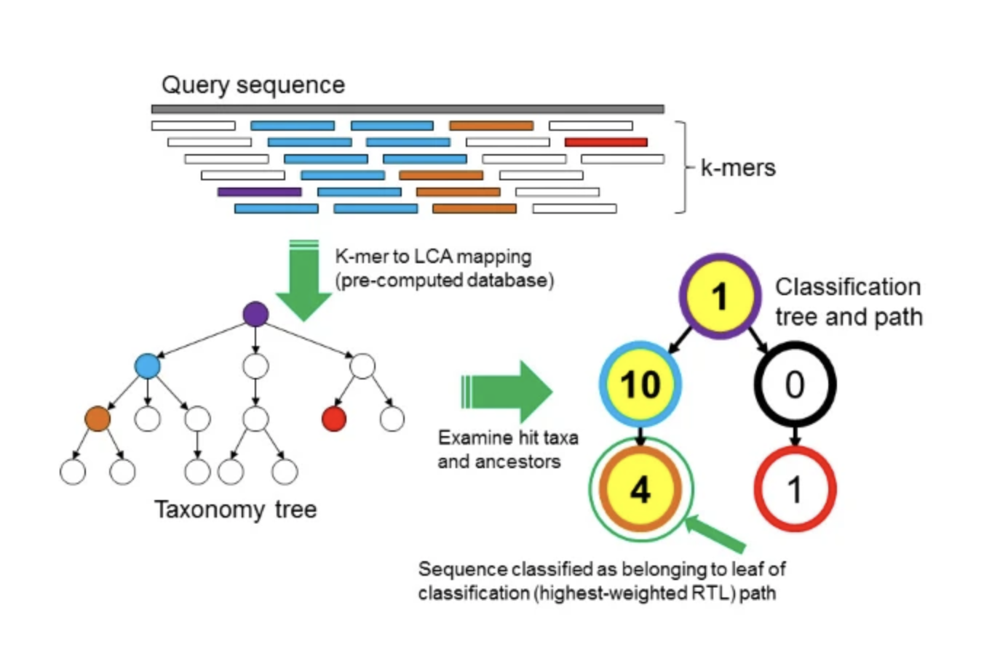

Objective 3 - Generate Taxonomy from Raw Reads with Kraken2
Objective Goals
- Run Kraken to assign SRA taxonomy against an NCBI database
- Visualize the Kraken results using Krona
Kraken2
- Kraken2 is a taxonomic classification system using exact k-mer matches, like STAT.
- This k-mer based approach has very fast classification speeds with high accuracy.
- This approach differs from homology based approaches that try to match sequences to each other and score them based on the number of mismatches, deletions and inserts.
- Kraken uses the entire kmer composition of the sequence to match it to a database where reference sequences have been broken down into kmer hashes or a database of what the kmers look like for a particular organism.
How does it work?

-
To classify a sequence, each k-mer in the sequence is mapped to the lowest common ancestor (LCA) of the genomes that contain that k-mer in a database.
-
The taxa associated with the sequences k-mers, as well as the taxas ancestors, form a pruned subtree of the general taxonomy tree, which is used for classification.
-
In the classification tree, each node has a weight equal to the number of k-mers in the sequence associated with the nodes taxon.
-
Each root-to-leaf (RTL) path in the classification tree is scored by adding all weights in the path, and the maximal RTL path in the classification tree is the classification path (nodes highlighted in yellow).
-
The leaf of this classification path (the orange, leftmost leaf in the classification tree) is the classification used for the query sequence.
At the core of Kraken is a database that contains records consisting of a k-mer and the LCA of all organisms whose genomes contain that k-mer. This database, built using a user-specified library of genomes, allows a quick lookup of the most specific node in the taxonomic tree that is associated with a given k-mer.
Wood, D.E., Salzberg, S.L. Kraken: ultrafast metagenomic sequence classification using exact alignments. Genome Biol 15, R46 (2014). https://doi.org/10.1186/gb-2014-15-3-r46
Step 1 - Run Kraken2 On The Affected Eye Sample
- Run the code block below to run Kraken2 on our affected eye sample
!/cluster/tufts/bio/tools/conda_envs/kraken/2.1.2/bin/kraken2 \
--use-names --threads 4 \
--db /cluster/tufts/bio/tools/training/metagenomics/kraken_virus \
--report results/ERR4836970_affected_kraken_report.txt --quick data/ERR4836970_affected.fastq \
--classified-out results/ERR4836970_affected_classified_sequences.tsv > results/sequences.kraken
Step 2 - Investigate the Affected Eye Sequence Report
- We can open up the sequence report and scroll through the findings. Let's look at the first 10 lines using the bash command "head" with the parameter "-n" which specifies the number of lines to look at.
The columns from left to right are:
| Column Number | Description |
|---|---|
| 1 | Percentage of fragments covered by the clade rooted at this taxon |
| 2 | Number of fragments covered by the clade rooted at this taxon |
| 3 | Number of fragments assigned directly to this taxon |
| 4 | A rank code, indicating (U)nclassified, (R)oot, (D)omain, (K)ingdom, (P)hylum, (C)lass, (O)rder, (F)amily, (G)enus, or (S)pecies. Taxa that are not at any of these 10 ranks have a rank code that is formed by using the rank code of the closest ancestor rank with a number indicating the distance from that rank. E.g., "G2" is a rank code indicating a taxon is between genus and species and the grandparent taxon is at the genus rank. |
| 5 | NCBI taxonomic ID number |
| 6 | Indented scientific name (indented using space, according to the tree structure specified by the taxonomy.) |
- Another option
--use-mpa-stylecan be used in conjunction with--report. This option provides output in a format similar to MetaPhlAn's output.
!head -n 10 results/ERR4836970_affected_kraken_report.txt
output
45.77 189824 189824 U 0 unclassified 54.23 224908 19 R 1 root 54.22 224880 4347 R1 131567 cellular organisms 33.50 138950 111 D 2759 Eukaryota 33.43 138647 0 D1 33154 Opisthokonta 33.43 138647 0 K 33208 Metazoa 33.43 138647 0 K1 6072 Eumetazoa 33.43 138647 0 K2 33213 Bilateria 33.43 138647 0 K3 33511 Deuterostomia 33.43 138647 0 P 7711 Chordata
Step 3 - Create the Affected Eye Krona Plot
- Run the code block below to create a Krona plot for our affected eye sample
!/cluster/tufts/bio/tools/Krona/KronaTools/bin/ktImportTaxonomy \
-t 5 -m 3 -k -i \
-o results/ERR4836970_affected_kraken.html \
results/ERR4836970_affected_kraken_report.txt
Affected Eye Kraken2 Krona Plot
from IPython.display import IFrame
display(IFrame(src='results/ERR4836970_affected_kraken.html', width=900, height=600))

Step 4 - Run Kraken2 On The Unaffected Eye Sample
- Run the code block below to run Kraken2 on our unaffected eye sample
!/cluster/tufts/bio/tools/conda_envs/kraken/2.1.2/bin/kraken2 \
--use-names --threads 4 \
--db /cluster/tufts/bio/tools/training/metagenomics/kraken_virus \
--report results/ERR4836973_unaffected_kraken_report.txt --quick data/ERR4836973_unaffected.fastq \
--classified-out results/ERR4836973_unaffected_classified_sequences.tsv > results/sequences.kraken
Step 5 - Investigate the Unaffected Eye Sequence Report
!head -n 10 results/ERR4836973_unaffected_kraken_report.txt
output
18.05 250 250 U 0 unclassified 81.95 1135 0 R 1 root 81.95 1135 104 R1 131567 cellular organisms 73.94 1024 488 D 2 Bacteria 28.30 392 66 P 1224 Proteobacteria 11.12 154 35 C 1236 Gammaproteobacteria 5.85 81 25 O 91347 Enterobacterales 3.54 49 10 F 543 Enterobacteriaceae 1.30 18 0 G 561 Escherichia 1.30 18 17 S 562 Escherichia coli
Step 6 - Create the Unaffected Eye Krona Plot
!/cluster/tufts/bio/tools/Krona/KronaTools/bin/ktImportTaxonomy \
-t 5 -m 3 -k -i \
-o results/ERR4836973_unaffected_kraken.html \
results/ERR4836973_unaffected_kraken_report.txt
Unaffected Eye Kraken2 Krona Plot
from IPython.display import IFrame
display(IFrame(src='results/ERR4836973_unaffected_kraken.html', width=900, height=600))

Kraken2 Questions:
-
Which sample, the affected eye or unaffected eye had a higher percentage of classified sequences?
-
Which sample, the affected eye or unaffected eye had a higher percentage of bacteria?
-
Does anyone spot a potential non-bacterial taxa in the affected eye?